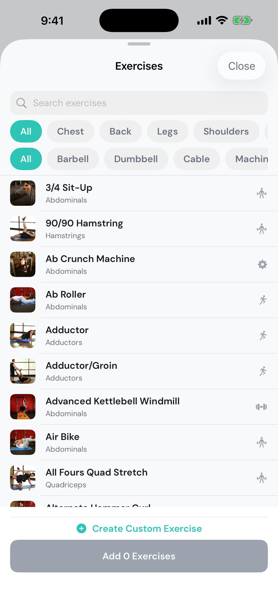

Your gym. Your rules.
A workout tracker with nothing in the way. Open it, log your sets, and see what you lifted last time. Save as many workouts as you want, add HIIT to strength days, and never hit a paywall.


What is Suzfit? Suzfit is a free iOS workout tracker from Cooper Industries for people who lift on their own plans. It combines a workout builder with an 800+ exercise library, an active-session log that remembers your last weights and suggests the next ones, a rest timer that works with the phone locked, live personal-record detection, and history and analytics. There is no account, no advertising and nothing to buy.
Build it. Lift it. Beat it.
Most trackers cap your saved routines or hide progress behind a subscription. Suzfit doesn't.
It remembers what you lifted.
Every set shows what you did last time right beside what you're doing now. A suggested weight sits at the top of each exercise, worked out from your last session and your progression rule. Type a weight once and it fills every set below.
- Previous session in every row
- Double progression, linear, or RPE, per workout or per exercise
- Add, remove and swap exercises mid-session

PRs, caught live.
Check off a set that's heavier than anything you've logged, or more reps at your best weight, and Suzfit says so on the spot. The set turns gold, your phone buzzes, and the record is kept for good.
- Weight PRs and rep PRs
- PR days highlighted on your activity heatmap
- Session summary lists every record you set
Rest that follows you.
The timer starts the moment you check off a set, using the rest you set for that exercise. Lock your phone, switch to music, walk to the water fountain: you'll get an alert when it's time to lift.
- Per-exercise rest times
- Skip or add 30 seconds in one tap
- Local notifications only, nothing leaves your phone

Layer HIIT onto strength days.
Build a plan from the exercise library, set sets, rep ranges, target RPE and rest per exercise, then add finishers like mountain climbers or box jumps to the end. Strength and conditioning live in the same plan and flow together in one session.
- Drag to reorder, duplicate, or edit any time
- Save unlimited workouts
- Changes you make mid-session can update the saved plan

800+ exercises, with demos.
Search or filter by muscle group and equipment. Every exercise has a demonstration image and step-by-step instructions. Can't find yours? Add a custom exercise and it behaves like any other.
- Filter by chest, back, legs, shoulders, arms, core and more
- Barbell, dumbbell, cable, machine, bodyweight
- Custom exercises with your own notes

Watch the numbers climb.
A weekly summary of workouts, volume and PRs. A muscle tracker showing what you hit in the last seven days. Weekly volume over time, and a chart of your top set for any exercise you've trained.
- Weekly volume trend
- Muscle activation, front and back
- Per-exercise top-set charts

Built for people who train on their own plan.
If any of these sound like you, Suzfit was built around your week.
And the rest of the gym bag
The details that make a tracker stick.
Free. Actually free.
No trial that expires, no locked features, no banner ads. Suzfit was built for one lifter first and shared as-is.
- Unlimited saved workouts
- 800+ exercise library plus custom exercises
- Weight suggestions and progression rules
- Rest timer with lock-screen alerts
- Live PR detection
- History, heatmap and analytics
- Private iCloud sync
Questions, answered.
Is Suzfit free?
Yes. Everything in Suzfit is free: unlimited saved workouts, the full exercise library, weight suggestions, analytics and iCloud sync. There are no ads, no subscriptions and no in-app purchases.
Do I need an account?
No. Suzfit works the moment you open it. Your data lives on your iPhone and, if you have iCloud enabled, in your own private iCloud account.
How do weight suggestions work?
Suzfit shows what you lifted for each set last time and applies your progression rule to suggest the next weight. Double progression adds weight once every set hits the top of your rep range; linear adds weight every session you hit your minimum; RPE adjusts to how hard the last session felt. Set the rule per workout or override it per exercise.
Can I add HIIT to a strength workout?
Yes. Add finisher exercises like mountain climbers or box jumps to the end of any strength plan, with their own sets and rep ranges. Strength and conditioning flow together in one session.
Does the rest timer work when my phone is locked?
Yes. The rest timer schedules a local notification, so you get an alert when rest ends even if the screen is off or you are in another app. That is the only reason Suzfit asks for notification permission.
Where is my data stored?
On your device and in your own private iCloud database, which syncs across your iPhones. Cooper Industries has no servers and cannot see your workouts. Details are in the privacy policy.
Does Suzfit support kilograms?
Version 1.0 logs in pounds. A full kilogram mode is planned.
Is there an iPad or Apple Watch app?
Not yet. Suzfit 1.0 is iPhone only.
 Scan with your iPhone
Scan with your iPhone